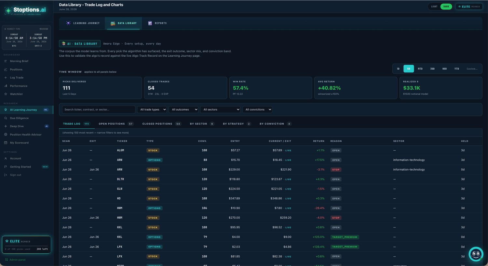
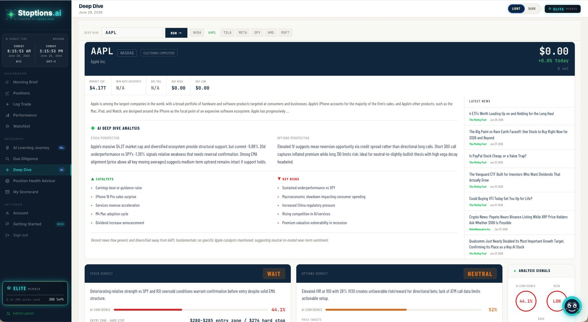
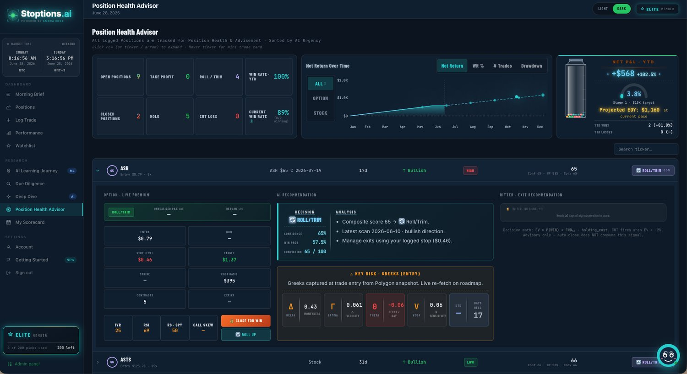
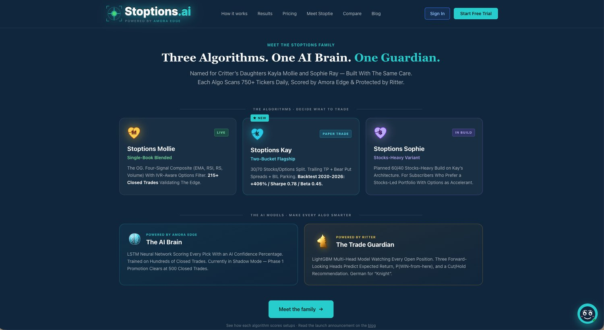
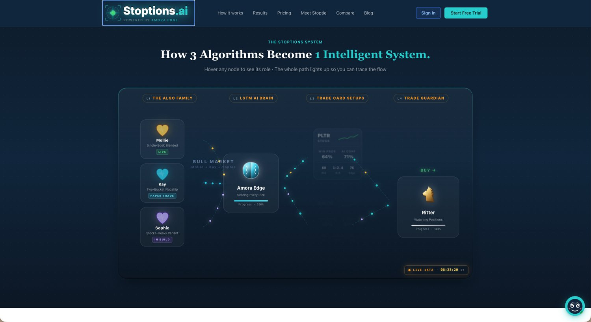
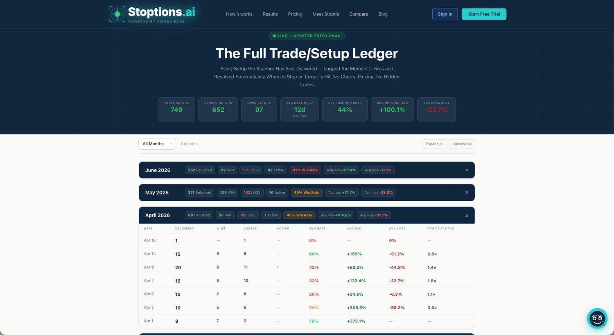

1 / 7The Challenge
Options decisions depend on data that lives in a dozen places — the live option chain, underlying stock data, IV and Greeks, relative strength, and conviction signals. Members needed all of it aggregated, scored, and ranked in one place, refreshed and ready before the open.
What We Built
A members-only dashboard that pulls a live Polygon (now Massive) option-chain feed, stock data, and several other market feeds, and aggregates them into a single command center. Each candidate becomes a full trade card — entry, target, stop, DTE, R/R, Greeks — scored by an LSTM model, with a daily AI morning brief summarizing the regime, what changed, and where the risk is.
How It Works
An algorithm fires on schedule, fetches the chain and supporting feeds through async API calls, scores every pick, and pushes the results downstream to the dashboard. A learning loop logs every pick and outcome so the model improves over time, and a guardian model re-scores open positions through the day with cut-or-hold guidance. The front end is pure, fast vanilla JS.
The Outcome
Members open one screen each morning instead of stitching together a broker, a chart, and spreadsheets — the day's best setups, full risk context, and an AI second opinion already waiting. The architecture (aggregate feeds → normalize → score → surface → brief) is the blueprint behind every HQ we build.